Meet The Team
Marian Mendoza
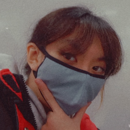Ayo, I'm Marian, I'm 18 and I am the photographer,editor and CS student studying in UCC who made this website. For my Web-Development Continuous Assessment, I decided to launch a photo-shoot project called Project and Play. I've lots of experience in editing, photography, graphics designing and directing, so I decided to take up my old hobbies for this project :)! I want to thank my friends who I met in UCC for helping me out with this project!
Rory Kirwan
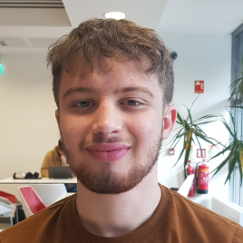How are we? My name is Rory Kirwan and I am a first-year computer science student at UCC. I'm originally from Clonmel, Tipperary and I have always had an interest in cinematography. So when Marian came to me and asked me to help with some behind the scenes filming on her photo shoot , I really wanted to help.
Emmet O'Shea
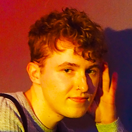Hi, my name is Emmet O'Shea and I'm a first year student in University College Cork. I am studying Biological and Chemical Sciences as I'm highly interested in both biology and chemistry, and research. I also enjoy playing video games, drawing and all things to do with fashion.
Aoife O'Brien
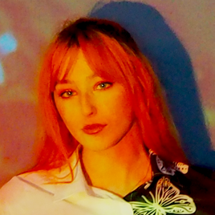Hey :), I'm Aoife. I'm doing Arts with Music in UCC. No surprise by my course choice I'm a musician, a trad Irish musician. I love a good ol' trad session. Apart from music I love a night out with friends, doing a bit of artsy DIYs, playing around with photography and a cosy pamper night with a movie on. I work as a barista so I also love to play around and experimenting with different kinds of drinks.
Ben Shorten
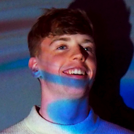Hey, I'm Ben. I'm a computer science student in UCC like the rest of them. I'm interested in art, video games, cooking and nature. My dream is to own a lime orchard in the south of France.
Evan Rea
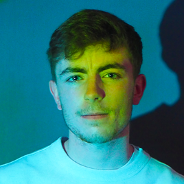Hello. This is Evan. I enjoy long walks on the beach and wine tasting. I do not enjoy the regular passage of life. I wish for a world in which I can own a lime orchard in the south of France with an unnamed himbo. I do not enjoy using capital letters because I do not like capitalism. Every day I wake up furious to be labouring under the viscous chains of capitalism. I do computer science in UCC as I believe the internet can bring us closer to a proletarian revolution.
Jay Maguire
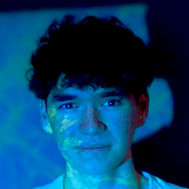Hi, my name is Jay. I'm a undergraduate computer science student in UCC. I do enjoy the regular passage of life and have a lot of hobbies that I enjoy doing such as sports, music and reading.
Sam Dunning
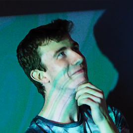Hey, I’m Sam, I’m 5 foot 11 and a half, or so my therapist says. I like to read sometimes when there is time…. time, time is a funny concept. I’m glad time is linear, and I am glad you asked. Imagine if we weren’t limited by the dimension of time, what an existence we would have, jumping between points in time and space simultaneously maybe consciously or spontaneously. Good thing you agree, otherwise I would sound like a CS deranged student. Luckily, I dodged a bullet and am studying Mathematics rather than CS phew {^_^}.
Wiktoria Kowalowka
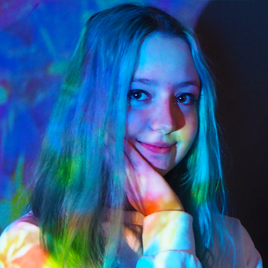Hi, my name is Wiktoria. I am an undergraduate student doing international arts in UCC. I am Polish yet have been living in Ireland for 15 years. I enjoy music and learning new languages.
Roby Rue
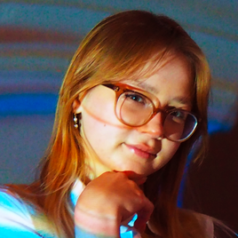Hiya my name is Rue, I'm 17 and I'm a student here at UCC studying world languages. I study Spanish, Japanese and Korean :) I like to draw, read and plant fruit trees in my spare time, I'm a study freak who practically lives in the library （＾▿＾).
Sadbh Rook
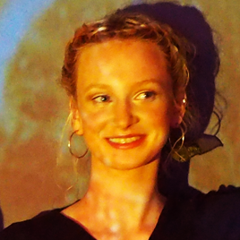Hi :), I'm Sadbh and I'm doing music and arts in UCC. I think my nose ring is a substitute for personality. I would say this photo-shoot was so fun and all these people are lovely if it wasn't so off brand
Shane Williams
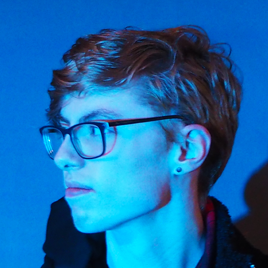I'm a 19 year old Computer Science student in UCC living inCork. If I'm not working I'm drinking. Maybe.
Flora
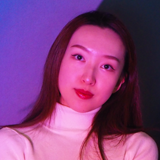Hi I'm Flora. I'm a postgraduate student in UCCand doing data science and analytics. I'm Chinese and from Qingdao, a seaside city. I like music and movies. My favorite movie studio is Disney and Marvel. It's nice to meet you!
Amy Craven
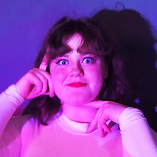Hello all! My name is Amy Craven and, like Marian, I'm in my first year in UCC studying Computer Science. I've often been 'camera-shy' and apprehensive of getting my photo taken but seeing what Marian could do with her camera changed my mind! I'd never seen such nice photos of myself, she's a real talent!
Rosha Murphy
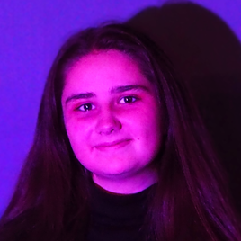Hi I'm Rosha Murphy and I'm a first year computer science student studying at UCC. When I'm not in college I'm sleeping or listening to music.
Zach Moynihan
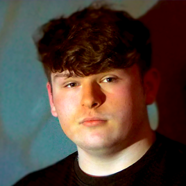Hi my name is Zach Moynihan I am a first year Arts student in UCC with a love for history. Some of my past times include weight lifting, playing playstation and hanging out with friends.